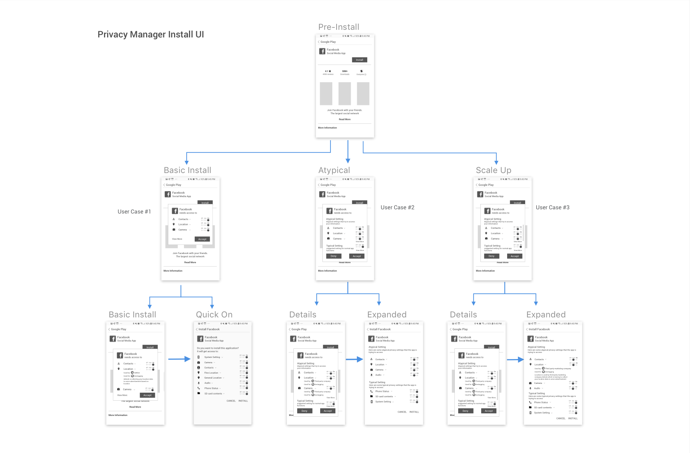
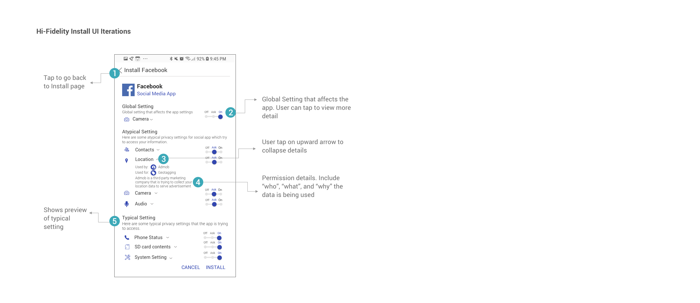
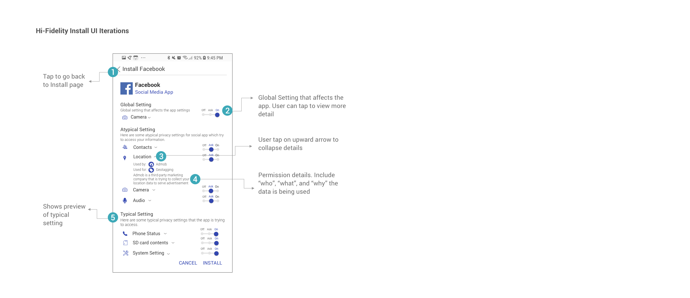

How can we make sure our data on smartphone devices is protected and not used by third-party companies?
The goal of the Brandeis project is to make vastly easier for developers and end-users to make privacy in the context of sensor-based smartphone apps
Fall 2018 Group Project - Work In Progress
In Collaboration with Siqi Wu, Asit Parida (Engineering), and Mike Czapik (Engineering)
Professor: Jason Hong
My Role: Interaction Design, User Testing, Prototyping, Logic Flow
Keywords: Security, Data, Mobile App
With the prevalence of sensor-based smart phone apps, mobile data privacy is getting more and more complex. We live in a society which we are overwhelmed by privacy alerts and news every day. How do we protect our privacy data so it is used for our specific usage purpose only?
The Brandeis Project is a collaboration between CMU, DARPA, BBN, and Invincea, with the aim to achieve an order of magnitude improvements for mobile privacy. Our goal is to help users become more sensitive in their data and lead them to configure a personalized private setting based on their choice.
As the Designer on the team (advised by Professor Jason Hong), my role is to reimagine the UX and UI for privacy settings in a privacy - enhanced Android OS.
If apps had clearer purposes (inferred or declared by devices), then we could create better predictive models of privacy concerns, which can scale to millions of apps and users. What we propose to Android is to ask the app developers to break down privacy requests, help users to recognize typical versus atypical data reqeusts, and give them recommended privacy suggestons.
In current Android OS, apps tell you what permissions they are using (e.g. location, camera), but they don't tell you:


Our Project shows user what the permissions are used for and who are the data being sent to
This is the new data model that DARPA and CMU will be proposing to Android: all Android developers need to specify the purpose of each privacy data use; on top of that, we can now parse out what third-party libraries are using what privacy data. Engineers have done the ground work. But now, here come the design challenge:

The most importantly, we need to think about how will users interacti with Privacy Manager and what are our chances to help users interact with privacy manager in an unobtrusive way.
I approached the challenge by designing the Install Time user interface (when users download an app). After discussion with my team, we thought the install interface will verly likely to be the first interface users interact with Privacy Manager to configure their privacy settings. A critical problem with current Install Interface is that the install configuration is almost a binary process for users. Users have to either agree with its all privacy settings, or they cannot download the app. With these problems in mind, I quickly moved into paper and low-fidelity design for Install UI solutions.
My initial prototype focused on detailing privacy settings for different purposes and defining what data is being accessed , why the data has been requested, and who is trying to access the data.
For user testing, I tried to recruit people outside of my network to receive more critical and unbiased feedback.
To begin, I organized my digital prototypes into Invision to create a mobile mockup. I recruited one person from CMU library, one from Starbucks coffee shop, and two people walking on the street. I received a variety of comments during Think Aloud process, but I was able to find repetitive patterns from those information. One common feedback I received from testings was Wow. That's a lot of information!"
Users don't understand why they need to configure and what they can configure without interfering basic functionalities of the appUsers don't know what is the "best" configuration setting for them. They don't know how to configure. Some of the terms don't relate to them right away. They need more explanations to help them to understand.
Here comes the problem : how to make the user interface simple but also informational so we can help users configure the safe setting in a more knowledgeable way?
Instead of directing users to another page, I designed pop-up box on the same page, so users will have a less obtrusive transition. I broke down the problems into categories by listing out the Atypical Settings on the top, and collapsed Typical Settings for this app categorization.
 

First version categorizes permissions by “typical” and “atypical” settings. We wanted to add an “ask” option for users so the users can set permission settings only when the data is accessed at the moment. Users can click on the downward arrows to view more details regarding the specific permission.
In order to help users make safer choices with their settings, we set the typical settings for the app category to be "on" and atypical settings to be "ask". Users can easily expand each setting category to see more details such as who is accessing the data, what data type is accessed, and why the data is requested.
In the next iteration, I will design how Global Policy (settings for all apps)affects users on install interface. There might be conflicting cases when a user sets location for Global Policy to be on, but the location policy for the specific app is "atypical". We need to inform users this specific case so they don't have conflicting mental models. In our previous version, I think the design is still a lot of text to read. I will do another round of user testing and work on simplying install UI. Furthermore, I will test on adding a recommended permission choice into the UI and iterate from the feedback.
From Install Interface to Privacy Policy Home Page
After users interact with Privacy Manager in the Install UI, We also want to allow users to come to Privacy Manager Home Screen to gain more knowledge about their privacy standing. They will have access for more detailed configurations at Privacy Manager Home Page.
We examined the previous design for Privacy Poliy Home Page, and found the following problems that we could fix through Heuristic Evaluation:
We then did user testing on the prototype. After user testing, I received the following results:
 What Users Think
What Users Think


After user testing, I removed all the explanations for each section on the home screen to make the interface look clean. The titles should be explanatory enough for users to understand. Users can click in "view details" to get more information on each section. The "Atypical Permissions" will be highlighted at the Privacy Rating section. I also designed another version of interface when a user has malsoftware such as spouseware installed on the computer. User will visually notice on the home screen by both color and privacy score change.

Our card sorting research shows that most of the users put data type/purposes as their primary concern, and they care least about user of the data. Based on this result, we designed a zoom-in effect for permissions, with which users would see the data type and purposes first, and can zoom in to see details and configure. Users would also be able to turn on/off/ask a group of permissions with one tap. The zoom-in design is applied to install UI, global settings and app settings in configure UI.
For future iterations, I will work on on-boarding screens to walk users through Privacy Manager home screen and introduce functionalities for each section. I will also design detailed pages inside each section. Additionally, I will think more about content in the collapsed hamburger menu.


We also thought that it would be helpful for users to have quick access to turn ALL the permissions for a specific category "On" or "Off". We did two iterations on the "Quick Settings" menu. The first one is to have "Quick Settings" collapse under the top navigation notification section. The second one will be closer to Android design which includes Quick Setting in one of the quick menus. We will do A/B Testing and Think Aloud Testing on these two iterations.
Our project is still work in progress. I am always happy to chat more about my updates! :)